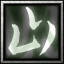

- 主要屬性 力量
攻擊範圍 128
- 基礎護甲 5
基礎攻速 1.8
- 基礎攻擊 113 - 131
基礎跑速 300
人稱"甲斐之虎"，被譽為戰國時代的第一兵法家，應幕府將軍足利義昭之請，整備數萬大軍東進，妄圖降伏德川、擊潰織田，進入京都以控制天下，但在三方 原大敗德川、織田聯軍後，卻突發重病，退兵時死於中途。他和上杉謙信的先後去世，為織田信長稱霸日本掃清了道路。 總歸武田信玄是打著風林火山的旗號，展開他開疆拓土的一生，而武田的騎兵隊非常強悍，也是"織田" "德川" 最怕的一支軍隊，世人稱他為"戰神"。
增加自身(10/20/30/40)%移動速度以及(30/60/90/150)%攻擊速度，持續13秒。
《靈氣》
增加自身和附近友方部隊(4/7/10/13)%的移動速度。
冷卻中靈氣效果不作用。
每秒呼叫6名武田騎兵在目標英雄身旁突襲，每個騎兵可以對敵人造成(40/60/80/120)傷害，徐如林持續7秒。
《靈氣》
每秒回復(10/15/20/25)的生命。
冷卻中靈氣效果不作用。
對周圍的敵人造成(100/200/300/400)傷害，並且在接下來7秒增加(30/45/60/75)攻擊傷害。
《靈氣》
灼燒附近的敵人，使他們每2秒失去(30/50/70/90)的生命。
冷卻中靈氣效果不作用。
-

-
T
不動如山
-
150/130/110
-
140
當不動如山啟動時，會增加額外(1000/1500/2500)生命值、(30/55/80)攻擊傷害，並且對法術免疫。 持續40秒。
學習等級為6/12/18。
永久性的提升(3/6/9/12)靈活、智慧和力量。